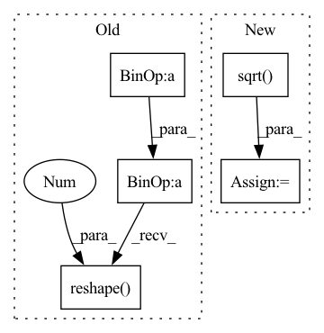

Pattern ID :37347
Before Change
// Use the first control point and PCA to select the other three control points
objPts_w_cent = self.objPts.reshape((self.n, 3)) - center_objPts
u, s, vh = np.linalg.svd(np.matmul(objPts_w_cent.T, objPts_w_cent), full_matrices=True)
contPts_w_2 = contPts_w_1 + np.sqrt(s[0])* vh[0]
contPts_w_3 = contPts_w_1 + np.sqrt(s[1])*vh[1]
contPts_w_4 = contPts_w_1 + np.sqrt(s[2])*vh[2]
return np.array([contPts_w_1, contPts_w_2, contPts_w_3, contPts_w_4]).reshape( 4, 3 )
def compute_alphas(self):
// Construct matrix for alpha calculation
objPts_w = np.array(self.objPts).transpose()[0]After Change
res = []
res.append(center)
for i in range(3):
another_pt = center + torch.sqrt( s[:, i]) *vh[:, i]
res.append(another_pt)
return torch.stack(res, dim=1)In pattern: SUPERPATTERN
Frequency: 3
Non-data size: 5
Instances Fragment ID: 107489256
Project Name: pypose/pypose
Commit Name: 762381a1eb57de9a7b7ffad5293e3bb33c859006
Time: 2023-02-24
Author: ztzhan1108@gmail.com
File Name: pypose/module/pnp.py
M Class Name: EPnP
N Class Name: EPnP
M Method Name: select_control_points(2)
N Method Name: select_control_points(1)
M Parent Class:
N Parent Class:
M File Name: pypose/module/pnp.py
N File Name: pypose/module/pnp.py
M Start Line: 108
M End Line: 118
N Start Line: 104
N End Line: 125
Before Change
entry_count = entry_count.expand_as(cumulative_sum) // [1, T] => [B, T]
cum_mean = cumulative_sum / entry_count // B, T
cum_var = (cumulative_pow_sum - 2 * cum_mean * cumulative_sum) / entry_count + cum_mean.pow(2) // B, T
cum_std = (cum_var + eps).sqrt() // B, T
cum_mean = cum_mean.reshape(batch_size * n_channels, 1, n_frames)
cum_std = cum_std.reshape( batch_size * n_channels, 1 , n_frames)
x = (input - cum_mean) / cum_std
if n_dim == 4:After Change
cumulative_mean = cumulative_sum / entry_count // [B, T]
cumulative_var = (cumulative_pow_sum - 2 * cumulative_mean * cumulative_sum) / entry_count + cumulative_mean.pow(2) // [B, T]
cumulative_std = torch.sqrt( cumulative_var + EPSILON) // [B, T]
cumulative_mean = cumulative_mean.reshape(batch_size * num_channels, 1, num_frames)
cumulative_std = cumulative_std.reshape(batch_size * num_channels, 1, num_frames) Fragment ID: 107489064
Project Name: haoxiangsnr/fullsubnet
Commit Name: 321920989a4aa255158770213e814befc8f94f27
Time: 2021-02-08
Author: haoxiangsnr@gmail.com
File Name: audio_zen/model/base_model.py
M Class Name: BaseModel
N Class Name: BaseModel
M Method Name: cumulative_layer_norm(1)
N Method Name: cumulative_layer_norm(1)
M Parent Class: nn.Module
N Parent Class: nn.Module
M File Name: audio_zen/model/base_model.py
N File Name: audio_zen/model/base_model.py
M Start Line: 225
M End Line: 261
N Start Line: 276
N End Line: 304
Before Change
def apply_mask_2_image(image, mask, width, height):
// mask = vv[0]
mask = mask[- width * height:].reshape( width, height, 1 )
mask = tf.image.resize(mask / mask.max(), image.shape[:2]).numpy()
return (mask * image).astype("uint8")
After Change
def apply_mask_2_image(image, mask):
if len(mask.shape) == 1:
width = height = int(np.sqrt( mask.shape[0]) )
else:
height, width = mask.shape[:2]
mask = mask.reshape(width, height, 1) Fragment ID: 107489125
Project Name: leondgarse/keras_cv_attention_models
Commit Name: d9f3514af2dab63a76a19ae7bd998a730a9cfd07
Time: 2021-11-26
Author: leondgarse@gmail.com
File Name: keras_cv_attention_models/visualizing.py
M Class Name: AnonimousClass
N Class Name: AnonimousClass
M Method Name: apply_mask_2_image(2)
N Method Name: apply_mask_2_image(4)
M Parent Class:
N Parent Class:
M File Name: keras_cv_attention_models/visualizing.py
N File Name: keras_cv_attention_models/visualizing.py
M Start Line: 220
M End Line: 222
N Start Line: 221
N End Line: 225